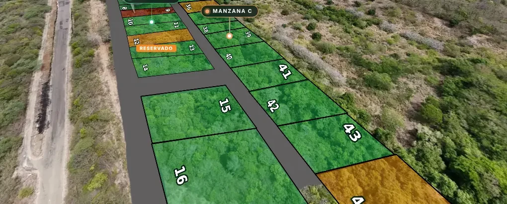
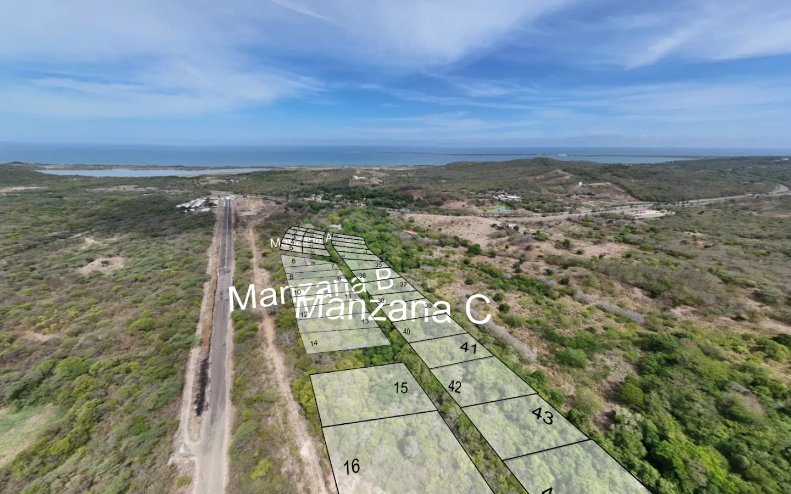

Su recorrido de 3DVista, convertido en un aplicativo que vende lotes
Cada lote se pinta según una hoja de cálculo y, al tocarlo, abre su ficha con WhatsApp. Funciona con cualquier recorrido que marque sus lotes como «rojo N». Vea el proceso completo con Cayman Creek, pruebe el suyo o edite los lotes de un recorrido ya publicado sin cambiar su .zip.
- Disponible
- Reservado
- Vendido


Antes · exportación Después · motorEl proceso, paso a paso
1 · Elija la exportación de 3DVista
Cayman Creek
Recorrido real de 45 lotes en dos vistas aéreas. Se usa la exportación tal como salió de 3DVista.
Otro recorrido
Arrastre aquí el .zip de la exportación
o2 · Revisión de compatibilidad ·
Lo que el motor necesita
Para tener en cuenta
3 · Configuración del proyecto
El analizador propone esta configuración a partir del recorrido. Complete los datos de contacto y revise las manzanas.
proyecto.json
4 · Resultado
Con esta exportación y su proyecto.json, el motor construyó el aplicativo que está publicado aquí mismo. Ábralo y toque un lote.
- 45lotes con su color
- 9números corregidos
- 7,4 MBmenos de descarga
- 53/53pruebas en navegador
Su recorrido es compatible. Para construir el aplicativo, en una copia del repositorio:
- Guarde la configuraciónen
(el botón «Descargar proyecto.json» la deja lista). Si tiene logos, póngalos enmarca/; si no, el motor genera uno con las iniciales. - Construya
- Pruebe y publiqueLa carpeta
salida/toures un sitio estático: se sube tal cual a GitHub Pages o a cualquier hosting.
Cayman Creek
Un motor genérico y proyectos que lo usan
Motor 3DVista
motor-3dvista/- No trae datos de ningún proyecto
- Sirve para cualquier recorrido con lotes «rojo N»
- El analizador de esta página es parte del motor
Cayman Creek (ejemplo)
proyectos/cayman-creek/- Sus datos en
proyecto.jsony su marca - El sitio que sale no necesita el motor para funcionar
- Otro proyecto: otra carpeta con su propio
proyecto.json
Lo que el motor cambia (sin fotos ni panoramas nuevos)
- Coloresgemelos verde y naranja de cada polígono rojo, encendidos según la hoja
- Ficha del loteárea, rentabilidad, separación y WhatsApp con el lote en el mensaje
- Etiquetasmanzanas y lugares nítidos que siguen la cámara
- Númeroscorrige los que la exportación trae corridos y los regenera nítidos
- Cámaraslas vistas abren mirando a los lotes, sin girar 360°
- Pesono descarga la piel vieja que ya no se ve
- Cargapantalla propia con avance real y la leyenda de colores
- Producciónquita el código que esconde la marca de agua de 3DVista
Cada parte del aplicativo
Lo que el motor no puede resolver solo
- Marca de agua «3dvista Academic». Viene de la licencia con que se exportó; se quita exportando con una licencia comercial de 3DVista.
- Imágenes que no vienen en la exportación. El motor usa la miniatura y lo avisa (en Cayman Creek, la página 9 del álbum móvil).
- Las manzanas. El analizador las propone, pero hay que revisarlas: en Cayman Creek acertó 33 de 45.
Capturas tomadas por las pruebas automáticas con una hoja de ejemplo (no son estados reales de venta). ULTRAMEDIA COMPANY · EDITOR.